日本語
キャラとアイテムの作り方
動作ごとに PNG 1枚。フレームを横に並べてつなげます。
スキルで作る · いちばん簡単
スキルの zip を Claude・ChatGPT・Gemini にアップロードして写真を渡すと、絵を見せながら一緒に直して、そのまま入れられる zip をくれます。
スキルの入手と使い方仕様をコピーして頼む
このページの仕様をマークダウンでコピーして ChatGPT・Claude に貼り付けると、この仕様どおりに作ってくれます。
アップロード
トレイメニューの「キャラクター > 作成…」でキャラ・アイテム・エモートのタブを選び、「+ 新しく作る」。名前(20文字まで)を書いて、動作ごとに PNG を選ぶか、その枠にドラッグして置きます。fps はおすすめの値が入っています。アイテムは種類(投げるもの・ごはん・うんち)と効果音の wav も選べます。保存すると自分のリストに入り、同じ場所で直したり消したりできます。キャラ変更・アイテム・エモートの選択画面のいちばん前にある + カードを押しても、その種類の作成画面が開きます。
友だちの画面には、友だちがトレイの「キャラクター > 変更…」の画面を開くか、トレイの「新しいキャラクター・アイテムを取得」を押したときに入ります。自分が選んだキャラはすぐに見えます。
ごはんのアイテムは、友だちを右クリックして「ごはん」から選んだあと友だちをクリックすると飛んでいきます。もう一度「投げるもの」を選ぶまで、クリックごとにごはんをあげます。
うんちのアイテムは fly の絵が床に落ちたうんちとして描かれます(投げたりごはんに使われたりしません)。選んだうんちで、自分のキャラがお腹いっぱいのときにうんちをします。友だちがまだ受け取っていないうんちは、受け取るまで標準のうんちで見えます。
エモート
「エモート」タブで GIF・WebP・APNG・PNG・JPG を選びます。アプリが 64px に縮めて16フレームまで選び、元の速さで保存します(元ファイルは 20MB、縦横 2048px まで)。名前は20文字までで、グループの中で重なってはいけません。: と空白はメッセージの中の :名前: が途切れるので使えず、標準エモートの名前(heart·question·exclamation·angry·lol·note)も使えません。
使う場所: 自分のキャラを押すと出るメニューの「エモート」(⌃⌥⌘E、Windows は Ctrl+Alt+E)の選択画面が頭の上に出ます。メッセージに : を打つと名前が出て、選ぶと吹き出しの中に :名前: として入ります。ステータスとニックネームの画面の「ステータス」タブの絵文字ボタンで、ステータスにも入れられます。チャットでメッセージへのリアクションとしても付けられます。同じグループの友だちにだけ見えます。
仕様
- フレームは 48×48、動作ごとに最大8フレーム(4フレームなら 192×48)
- 背景は透明、1ファイル 200KB 以下(超えるとアプリが保存し直して小さくします。効果音の wav は 50KB)
- 右を向くように描きます(左向きはアプリが反転します)
- キャラとうんちはいちばん下の行に接して、横は中央。投げるものとごはんはフレームの中央
- キャラは48マスをたっぷり埋めます(塗ったマス 800~1200個、高さ 30~46マス、体が細いならもっと大きく)。アプリは拡大しないので、小さく描くと友だちのキャラの隣で小さく見えます
キャラの動作
idle、walk、sleep だけあれば大丈夫です。ほかは無ければ代わりに使う動作があります。offline が無いと、オフラインのときは石になります。
| 動作 | いつ | おすすめ | 無いとき |
|---|---|---|---|
idle 必須 | じっとする | 2枚、2fps | |
walk 必須 | 歩くとき | 4枚、6fps | |
sleep 必須 | 30分の離席、または画面ロック(Zzz はアプリが描きます) | 2枚、1fps | |
poked | つつかれたとき | 2枚、8fps | idle |
throw | 投げるとき | 3枚、10fps | idle |
hit | 当たったとき | 2枚、8fps | poked |
jump | よけるとき、ジャンプの動作 | 2枚、8fps | idle |
eat | ごはんをもらうとき、もぐもぐの動作 | 3枚、6fps | happy |
wave | 友だちが来たときのあいさつ、あいさつの動作 | 3枚、6fps | happy |
happy | なでられたとき、うれしいの動作 | 2枚、4fps | idle |
offline | オフライン(倒れた姿) | 1枚、1fps | 石 |
アイテムの動作
| 動作 | いつ | おすすめ | 無いとき |
|---|---|---|---|
fly 必須 | 飛んでいる間。作成画面の「飛ぶときに回す」をオンにすると、アプリが回してくれます(新しく作るとオフです)。オフにした投げるものは進む方向を向いてまっすぐ飛ぶので右を向くように、オフにしたごはんは描いたままで飛ぶのでまっすぐ立った姿で描きます。止まって見えないように、フレームで動きをつけます(例: ぽんぽん跳ねる、きらめく)。うんちは床に置かれた姿 | 投げるものは1枚、ごはんは1~4枚、12fps(うんちは1枚) | |
impact | 当たる瞬間(投げるものだけ、ごはんはすぐ食べます) | 3枚、12fps | アプリが描く星の弾け |
効果音の wav は当たる瞬間(うんちは落ちるとき)に鳴ります。無いと投げるものとごはんは音が出ず、うんちはアプリが「ぷぅ」と鳴らします。
例: おもちゃのハンマー
標準のアイテムです。fly は1枚だけですが、飛んでいる間は回ります(ごはんは回りません)。
| 動作 | 動き | アップロードする形(4倍) |
|---|---|---|
fly飛んでいる間 | 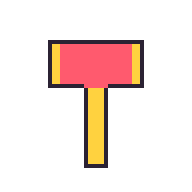 | |
impact当たる瞬間 | 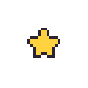 | 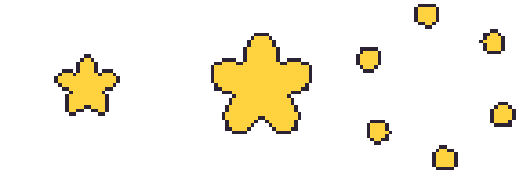 |
実際の大きさでダウンロード: fly, impact, まとめてダウンロード(zip)


うんち
うんちのアイテムは fly が1枚あれば大丈夫です。床に置かれた姿で、回転なしで描かれます。アプリは縮めずに 48×48 のマスをそのまま描くので、フレームの下の中央に小さく(標準のうんちは幅17・高さ12マス)描いて、上は空けておきます。うんちの形でなくても大丈夫です。キャラに合う小さな小物(ミニかぼちゃ、ひつぎ、毛糸玉など)も、下の中央の 24×24 に収まれば大丈夫です。下は標準のうんちです。
| 動作 | 動き | アップロードする形(4倍) |
|---|---|---|
fly床に置かれた姿 | 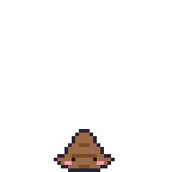 |
実際の大きさでダウンロード: fly

例: トッギ
ペンギンのぬいぐるみを見て作ったトッギの全動作です。上の表のおすすめの枚数そのままで、同じ体のままポーズだけ変えて描いているので、動作どうしで形がずれません。
| 動作 | 動き | アップロードする形(4倍) |
|---|---|---|
idleじっとする | 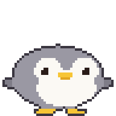 | 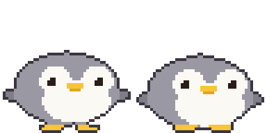 |
walk歩くとき | 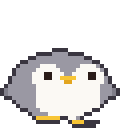 | 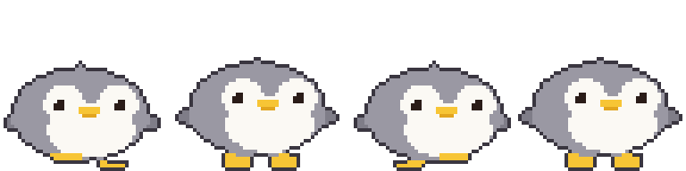 |
sleepねむり | 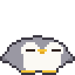 | 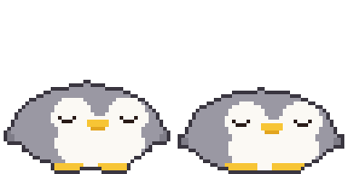 |
pokedつつかれたとき | 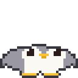 | 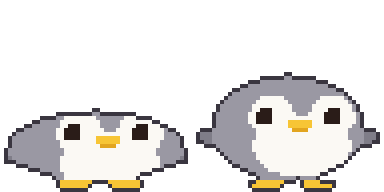 |
throw投げるとき | 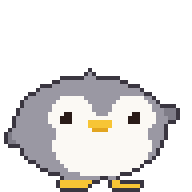 | 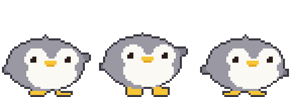 |
hit当たったとき | 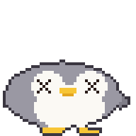 | 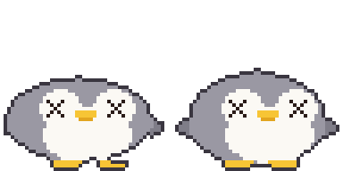 |
jumpよける・ジャンプ | 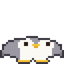 | 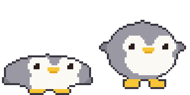 |
eatごはんをもらうとき | 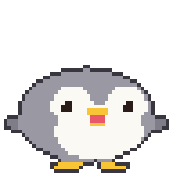 | 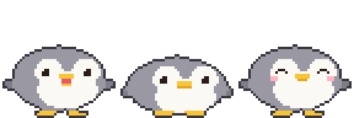 |
waveあいさつ | 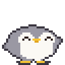 | 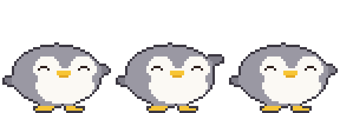 |
happyなでる | 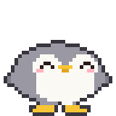 | 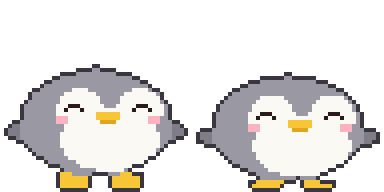 |
offlineオフライン | 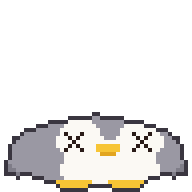 |
実際の大きさでダウンロード: idle, walk, sleep, poked, throw, hit, jump, eat, wave, happy, offline, まとめてダウンロード(zip)


テンプレート
作成画面の「テンプレート取得」で、動作ごとにアプリのハムチ(アイテムはどんぐり)の例が入ったテンプレートをダウンロードできます。空のテンプレートはこちら: 2フレーム, 4フレーム, 8フレーム, まとめてダウンロード(zip)


下のレイヤーに敷いて描いたら、テンプレートのレイヤーはオフにして保存します。赤い線が足の基準線です。
お絵かきツール: Piskel(ウェブ、無料), LibreSprite(無料), Aseprite(有料)
AI で作る
画像 AI は 48ピクセルをきっちり守れません。大きく作って縮めてから整えます。
- 下のプロンプトで生成
- フレームごとに 48×48 に縮めます。補間方式は必ず ニアレストネイバー(Nearest Neighbor)、でないとぼやけます。
- 背景を透明にして、フレームの位置をそろえる
インストールなしでブラウザから:
- Photopea(無料、Photoshop に似ています): 縮めるのは「イメージ > 画像サイズ」でリサンプルを Nearest Neighbor に。背景は自動選択ツール(許容値 0、アンチエイリアスはオフ)で背景を押して Delete、PNG で書き出します。
- remove.bg(無料): 背景だけ消すとき。縁がぼやけることがあるので 縮める前の大きい画像に使います。
基本の姿
Pixel art sprite of a cute [animal], side view facing right, full body, match the body shape, proportions and features of the attached picture if any (otherwise the real proportions of that animal or character), on a 48x48 pixel grid, upscaled so one art pixel is a clean 16x16 block (768x768 per frame), hard edges, no anti-aliasing, no gradients, no dithering, about 8 colors, 1px dark outline, flat shading, transparent background, fills most of the grid (about 30-46 pixels tall), feet on the bottom row, horizontally centered, nothing touching the top or side edges, no shadow, no text
動作シート(上の結果を参考画像として添える)
Pixel art sprite sheet of the same character, [N] frames in one horizontal row, no gaps, facing right, animation: [motion], each frame on a 48x48 pixel grid, upscaled so one art pixel is a clean 16x16 block (768x768 per frame), hard edges, no anti-aliasing, no gradients, no dithering, same palette (about 8 colors) as the reference, 1px dark outline, same size and position in every frame, feet on the bottom row, transparent background, the 4 corner pixels of every frame transparent, nothing touching the top or side edges, no shadow, no text
| 動作 | [N] | [motion] | トッギ |
|---|---|---|---|
idle | 2 | gentle breathing, body down 1px in frame 2 | |
walk | 4 | walk cycle: left foot forward, body up, right foot forward, body up | |
sleep | 2 | eyes closed, body rises and falls 1px | |
poked | 2 | squashed flat, then back to normal | |
throw | 3 | wind up, then swing one arm forward | |
hit | 2 | knocked back, dizzy swirl eyes | |
jump | 2 | crouch, then stretch up | |
eat | 3 | mouth open, chewing, cheeks puffed | |
wave | 3 | one paw raised, waving | |
happy | 2 | smiling closed eyes, tiny heart | |
offline | 1 | knocked out, squashed flat on the ground, X eyes |
アイテム
Pixel art game item, [item], one single frame on a 48x48 pixel grid, upscaled so one art pixel is a clean 16x16 block (768x768), hard edges, no anti-aliasing, no gradients, no dithering, centered in the frame, about 8 colors, 1px dark outline, transparent background, the 4 corner pixels transparent, no shadow, no text
投げるものの impact は別に描きます(ごはんとうんちにはありません):
Pixel art impact effect sprite sheet, 3 frames in one horizontal row, no gaps, a star bursting from the center of the frame and breaking into pieces, each frame on a 48x48 pixel grid, upscaled so one art pixel is a clean 16x16 block (768x768 per frame), hard edges, no anti-aliasing, no gradients, no dithering, centered in every frame, about 8 colors, 1px dark outline, transparent background, the 4 corner pixels of every frame transparent, no shadow, no text
ごはんは「飛ぶときに回す」をオフにするとまっすぐ飛びます。飛んでいる間に動かしたいときは何枚かで:
Pixel art food item, [item], [N] frames in one horizontal row, no gaps, upright in every frame (not spinning), gently bobbing up and down with a small sparkle, each frame on a 48x48 pixel grid, upscaled so one art pixel is a clean 16x16 block (768x768 per frame), hard edges, no anti-aliasing, no gradients, no dithering, centered in every frame, about 8 colors, 1px dark outline, transparent background, the 4 corner pixels of every frame transparent, no shadow, no text
うんち
[character] は自分のキャラの名前と見た目です(例: 「トッギ、灰色のペンギン、黄色いくちばし」)。
Pixel art of a cute squat swirl poop with a tiny face colored and decorated like [character] (one feature such as ears or beak), or a small prop that matches [character] (for example a mini pumpkin or a coffin), one single frame on a 48x48 pixel grid, upscaled so one art pixel is a clean 16x16 block (768x768), hard edges, no anti-aliasing, no gradients, no dithering, small (about 17x12 pixels), horizontally centered, sitting on the bottom row, entirely inside the bottom-center 24x24 area of the grid (x 12-35, y 24-47), about 8 colors, 1px dark outline, transparent background, no shadow, no text
スキルで作る(いちばん簡単)
huggybugi-character.zip をダウンロードして Claude・ChatGPT・Gemini にアップロードし、写真と一緒に「SKILL.md のとおりにこの写真で Huggybugi のキャラを作って」と言うと、動作11個を描いて(必要ならうんち・投げるもの・ごはんも)、下の「まとめてアップロード」にそのまま入れられる zip をくれます。AI がコードを実行できる必要があります(Claude・ChatGPT はコード実行ができるモデルで)。毎回アップロードするのが面倒なら、スキルとして登録しておいてください。そのあとは写真だけ渡して「Huggybugi のキャラを作って」で済みます。
- Claude(ウェブ・アプリ): 設定の Capabilities(または Customize > Skills) → 「Upload skill」に zip をそのまま。コード実行がオンの有料プランが必要
- ChatGPT: Skills が使えるプランなら Skills → アップロードに zip をそのまま。そうでなければ、会話ごとに zip を一緒にアップロードします
- Gemini(ウェブ・アプリ): Skills で zip をアップロード(個人アカウント)
- Gemini CLI: zip を展開して
huggybugi-characterフォルダを~/.gemini/skills/に
Claude Code と Codex は zip なしでプラグインとしてインストールします。新しいバージョンが出ると、プラグインの更新で一緒に変わります。アプリの作成画面の「AI で作る」でも、このコマンドと仕様をコピーできます。
# Claude Code /plugin marketplace add Zaehyeon2/huggybugi /plugin install huggybugi@huggybugi # Codex codex plugin marketplace add Zaehyeon2/huggybugi codex plugin add huggybugi@huggybugi
メニューの名前はサービス側で変わることもあります。詳しくは zip の中の README.md を。
コードを実行する AI(ChatGPT、Claude など)
マスがきっちり出ます。体・目・足を楕円のような図形で定義して、ポーズの値(体の高さ、目の形、足の上げ)を受け取って1枚を描く関数ひとつで全動作を作らせると、動作どうしで形がずれません。写真や絵を一緒に渡すと、色と見た目をまねて描きます。 写真がなければ、先にその動物やアイテムのかわいいドット絵をいくつか探して見てから描かせると、ずっと良くなります。
Write and run a Python (Pillow) script that draws a pixel art [animal] (see the attached picture) for a 48x48 desktop pet. Match the picture's body shape, proportions and features as closely as the grid allows (no picture: first look up a few cute pixel art references of that animal or item and follow their proportions, without copying any one of them). Build each frame from simple shapes (ellipses for body, face, feet) in ONE function draw(pose) that takes pose values like bob, eyes, foot lift, so every animation reuses the same shapes. Add a 1px dark outline automatically around the filled pixels. Facing right, feet touching row 47, the 4 corner pixels transparent. Save one horizontal strip PNG per animation (1x, frames 48x48, no gaps), each file named exactly after the animation (idle.png, walk.png, ...): idle 2, walk 4, sleep 2, poked 2, throw 3, hit 2, jump 2, eat 3, wave 3, happy 2, offline 1. Put all the PNGs in one zip file for download. Show me an 8x preview, then let me ask for changes.
アイテムとうんちは動作が違うので、上のプロンプトの代わりにこれを使います。投げるものとごはんのうち、自分の種類の行だけ残して消します。
Write and run a Python (Pillow) script that draws a pixel art [item] (see the attached picture) for a 48x48 desktop pet app. Build it from simple shapes with a 1px dark outline, transparent background, centered in the frame, the 4 corner pixels of every frame transparent. Save horizontal strip PNGs (1x, frames 48x48, no gaps), keeping only the line for your item kind: thrown item: fly 1 facing right (with 'spin while flying' on, the app spins it, so do not draw spin frames) and impact 3 (the moment it hits). food: fly 1-4 drawn upright (it is not spun), gently bobbing with a small sparkle, no impact (food is eaten on arrival). Name the files exactly fly.png and impact.png and put them in one zip file. Show me an 8x preview, then let me ask for changes.
Write and run a Python (Pillow) script that draws a pixel art poop for a 48x48 desktop pet, colored and decorated like [character] (one feature such as ears or beak), or a small prop that matches [character] instead of a poop. One 48x48 frame saved as fly.png: small (about 17x12 pixels), horizontally centered, sitting on the bottom row, entirely inside the bottom-center 24x24 area (x 12-35, y 24-47), flat and cute, 1px dark outline, transparent background. Show me an 8x preview.
アイテムのコードはだいたいこんな形です(おもちゃのハンマーの fly と impact、標準のうんち)。上の例のハンマーとうんちの絵は、このコードから出たものと同じです。ファイル名は動作の名前そのまま fly.png・impact.png で大丈夫で、下の例は2つのアイテムを一度に描くので名前の前に接頭辞を付けています。
import math
COLORS = {'K': '#2b2233', 'Y': '#ffd23f', 'R': '#ff5a6e', 'F': '#9a6a48', 'N': '#7a4a24',
'E': '#1b1420', 'P': '#ff9fb0'}
N = 48 # フレームは 48x48
def oval(x, y, cx, cy, rx, ry): # マスの中心(+0.5)が楕円の中なら true
return ((x + 0.5 - cx) / rx) ** 2 + ((y + 0.5 - cy) / ry) ** 2 <= 1
# マスごとの色の文字から1枚を作り、外の縁を 1px の黒い線(K)に変える。
def render(fill):
g = [[fill(x, y) for x in range(N)] for y in range(N)]
solid = lambda x, y: 0 <= x < N and 0 <= y < N and g[y][x] != '.'
return [''.join('K' if c != '.' and not (solid(x - 1, y) and solid(x + 1, y)
and solid(x, y - 1) and solid(x, y + 1)) else c
for x, c in enumerate(row)) for y, row in enumerate(g)]
# おもちゃのハンマー: fly 1枚(「飛ぶときに回す」をオンにするとアプリが回す)
def hammer(x, y):
if 12 <= x <= 35 and 10 <= y <= 21:
return 'Y' if x <= 14 or x >= 33 else 'R'
if 21 <= x <= 26 and 22 <= y <= 41:
return 'Y'
return '.'
# impact: 星が大きくなってから破片に散る(3枚)
def star(r):
def fill(x, y):
dx, dy = x + 0.5 - 24, y + 0.5 - 24
a = math.atan2(dy, dx) + math.pi / 2
edge = r * (0.55 + 0.45 * abs(math.cos(a * 5 / 2)))
return 'Y' if math.hypot(dx, dy) <= edge else '.'
return fill
def burst(color, k, n=6):
def fill(x, y):
r, s = 10 + k * 5, 4.4 - k * 0.45
for i in range(n):
a = i / n * math.pi * 2 + k * 0.2
if oval(x, y, 24 + math.cos(a) * r, 24 + math.sin(a) * r, s, s):
return color
return '.'
return fill
# うんち: fly 1枚。いちばん下の行に接する3段のとぐろ、下の段に目・ほお・口
TIERS = [(23.5, 38.8, 3.4, 1.9), (23.5, 41.9, 5.8, 2.2), (23.5, 44.9, 8.1, 3.1)]
DOTS = {(22, 36): 'F', (23, 36): 'F', (24, 36): 'F', (20, 44): 'E', (26, 44): 'E',
(18, 45): 'P', (19, 45): 'P', (27, 45): 'P', (28, 45): 'P',
(22, 46): 'N', (23, 46): 'N', (24, 46): 'N'}
def poop(x, y):
if (x, y) in DOTS:
return DOTS[(x, y)]
for i, (cx, cy, rx, ry) in enumerate(TIERS):
if oval(x, y, cx, cy, rx, ry):
# 上の段の下の端は、下の段に乗った溝
return 'N' if i < len(TIERS) - 1 and y >= cy + ry - 1.1 else 'F'
return '.'
ANIMS = {
'hammer-fly': [render(hammer)],
'hammer-impact': [render(star(9)), render(star(15)), render(burst('Y', 2))],
'poop-fly': [render(poop)],
}
# 動作ごとに横ストリップの PNG 1枚(1倍、フレーム 48x48)
def save(name, frames):
from PIL import Image, ImageColor
img = Image.new('RGBA', (N * len(frames), N))
for i, g in enumerate(frames):
for y, row in enumerate(g):
for x, c in enumerate(row):
if c != '.':
img.putpixel((i * N + x, y), ImageColor.getrgb(COLORS[c]))
img.save(name + '.png')
if __name__ == '__main__':
for name, frames in ANIMS.items():
save(name, frames)
AI が書くコードはだいたいこんな形です(トッギ、動作11個すべて)。上の例のトッギの絵は、このコードから出たものと同じです。Pillow があれば実行して、動作ごとに PNG が保存されます。
import math
COLORS = {'K': '#3a3640', 'G': '#9a98a3', 'g': '#7f7d88', 'W': '#fbf9f4', 'Y': '#f7c535',
'y': '#e2a51f', 'E': '#2a1c18', 'P': '#ffb3c0', 'R': '#e8586a'}
N = 48 # フレームは 48x48
S = 1.5 # 32マスで決めた寸法を48マスに
def rnd(v): # .5 は切り上げ(python の round は偶数に寄るので使わない)
return math.floor(v + .5)
def u(v): # ポーズの移動量を48マスの整数に
return int(math.copysign(rnd(abs(v) * S), v)) if v else 0
def oval(x, y, cx, cy, rx, ry):
return ((x + .5 - cx) / rx) ** 2 + ((y + .5 - cy) / ry) ** 2 <= 1
def tri(x, y, a, b, c):
px, py = x + .5, y + .5
s = lambda p, q: (px - q[0]) * (p[1] - q[1]) - (p[0] - q[0]) * (py - q[1])
d = (s(a, b), s(b, c), s(c, a))
return not (min(d) < 0 and max(d) > 0)
# 片目(3x3 基準)。dx, dy は目の左上からの距離
def eye(dx, dy, kind):
if kind == 'open':
return ('W' if dx == dy == 0 else 'E') if 0 <= dx <= 2 and 0 <= dy <= 2 else None
if kind == 'wide': # おどろき: 4x4 にハイライト
return ('W' if dx == dy == -1 else 'E') if -1 <= dx <= 2 and -1 <= dy <= 2 else None
hit = {'closed': (dy == 1 and dx in (-1, 3)) or (dy == 2 and 0 <= dx <= 2),
'happy': (dy == 0 and 0 <= dx <= 2) or (dy == 1 and dx in (-1, 3)),
'hurt': -1 <= dx <= 3 and -1 <= dy <= 3 and (dx == dy or dx == 2 - dy)}[kind]
return 'E' if hit else None
# ポーズの値だけで1枚を描く。すべての動作が同じ図形を使う。
# squash: + 平たく、- 細長く。feet: 足の上げ。flip: 羽の上げ。lean: 体の左右の移動
def draw(bob=0, squash=0, feet=(0, 0), flip=(0, 0), eyes='open', mouth='', blush=False, lean=0):
ry = (9 - squash) * S
rx = min((13 + squash * .8) * S, 22.4) # つぶれた体がマスの外に出ないように
by = (30.4 + min(bob, 1)) * S - ry + max(bob - 1, 0) * S
cx = min(max((16 + lean) * S, rx + 1.4), 46.6 - rx)
wl, wr = max(cx - rx + .3 * S, 4.5), min(cx + rx - .3 * S, 43.5)
fy = by + 1.5 * S
ey = rnd(by - 3 * S)
shift = 3 + u(lean) # 顔は3マス右を向く
gy = rnd((30 + min(bob, 0)) * S) - u(max(feet))
def foot(fcx, x, y, up):
b = 47 - u(up)
return b - 2 + min(0, u(bob + up)) <= y <= b and abs(x + .5 - fcx) <= (3.5 if y == b else 4.8)
def pixel(x, y):
body = oval(x, y, cx, by, rx, ry) or tri(
x, y, (cx - 3.5 * S, by - ry + 2 * S), (cx + 3.5 * S, by - ry + 2 * S), (cx, by - ry - .8 * S))
fin = oval(x, y, wl, fy - flip[0] * S, 2.6 * S, 1.8 * S) or oval(x, y, wr, fy - flip[1] * S, 2.6 * S, 1.8 * S)
paw = foot(18.5, x, y, feet[0]) or foot(31.5, x, y, feet[1])
# ぬいぐるみのように足が体の前に出て見えるよう、体より先に塗る
if paw and y >= gy:
return 'Y'
if not body:
return 'g' if fin else 'Y' if paw else '.'
fx = x - shift
e = eye(fx - 14, y - ey, eyes) or eye(fx - 31, y - ey, eyes)
if e:
return e
if y in (ey + 2, ey + 3) and 21 <= fx <= 26: # くちばし
return 'Y'
if mouth == 'open': # 食べるときは開いて口の中が見える
if ey + 4 <= y <= ey + 5 and 22 <= fx <= 25:
return 'R'
if y == ey + 6 and 22 <= fx <= 25:
return 'Y'
elif y == ey + 4 and (21 if mouth == 'chew' else 22) <= fx <= (26 if mouth == 'chew' else 25):
return 'y'
if blush and y in (ey + 3, ey + 4) and (11 <= fx <= 13 or 34 <= fx <= 36):
return 'P'
face = (oval(fx, y, 11 * S + .5, by - 2 * S, 3.8 * S, 3.6 * S)
or oval(fx, y, 21 * S + .5, by - 2 * S, 3.8 * S, 3.6 * S)
or oval(fx, y, 16 * S + .5, by + 3 * S, 8.2 * S, 5.2 * S))
return 'W' if face else 'G'
g = [[pixel(x, y) for x in range(N)] for y in range(N)]
solid = lambda x, y: 0 <= x < N and 0 <= y < N and g[y][x] != '.'
edge = lambda x, y: not all(solid(x + a, y + b) for a, b in ((1, 0), (-1, 0), (0, 1), (0, -1)))
return [''.join('K' if c != '.' and edge(x, y) else c for x, c in enumerate(row)) for y, row in enumerate(g)]
ANIMS = {
'idle': [draw(), draw(bob=1)],
'walk': [draw(feet=(1, 0), lean=-1), draw(bob=-1), draw(feet=(0, 1), lean=1), draw(bob=-1)],
'sleep': [draw(eyes='closed', bob=1, squash=1), draw(eyes='closed', bob=2, squash=1)],
'poked': [draw(eyes='wide', squash=3), draw(eyes='wide')],
'throw': [draw(flip=(0, 4), lean=-1), draw(flip=(0, 5), lean=-1, bob=-1), draw(flip=(0, -1), lean=1)],
'hit': [draw(eyes='hurt', lean=-2, squash=1), draw(eyes='hurt', bob=1)],
'jump': [draw(squash=3, flip=(-1, -1)), draw(bob=-3, squash=-1, feet=(2, 2), flip=(3, 3))],
'eat': [draw(mouth='open'), draw(mouth='chew', bob=1, squash=1), draw(eyes='happy', blush=True)],
'wave': [draw(flip=(0, 3), eyes='happy'), draw(flip=(0, 6), eyes='happy'), draw(flip=(0, 3), eyes='happy')],
'happy': [draw(eyes='happy', blush=True, bob=-1), draw(eyes='happy', blush=True)],
'offline': [draw(eyes='hurt', squash=3, bob=1, flip=(-1, -1))],
}
# 動作ごとに横ストリップの PNG 1枚(1倍、フレーム 48x48)
def save(name, frames):
from PIL import Image, ImageColor
img = Image.new('RGBA', (N * len(frames), N))
for i, g in enumerate(frames):
for y, row in enumerate(g):
for x, c in enumerate(row):
if c != '.':
img.putpixel((i * N + x, y), ImageColor.getrgb(COLORS[c]))
img.save(name + '.png')
if __name__ == '__main__':
for name, frames in ANIMS.items():
save(name, frames)
まとめてアップロード
PNG を zip ひとつにまとめて作成画面にドラッグして置くか、「まとめて入れる」で zip ファイルを選ぶと、枠ごとに一度に入ります。まとめていないフォルダは「まとめて入れる」でフォルダを選びます。入れる前にファイルごとに入る枠を見せて、名前が合わないファイルは自分で枠を選びます。上の「まとめてダウンロード」の zip もこの名前なので、そのまま入れて試せます。
ファイル名は 動作の名前そのままです。大文字小文字は関係なく、zip の中にフォルダがあっても大丈夫です。
- キャラ:
idle.pngwalk.pngsleep.pngpoked.pngthrow.pnghit.pngjump.pngeat.pngwave.pnghappy.pngoffline.png - アイテム:
fly.pngimpact.png、効果音sound.wav(うんちはfly.pngだけ)
アップロード前のチェック
- 高さ48、幅は48の倍数、8フレーム以下
- 背景は透明、テンプレートの線なし
- フレームの四隅が全部塗られていない(全部塗られていると、背景が残っていると見なして弾きます)
- 右を向いて、足はいちばん下、フレームごとに位置が同じ